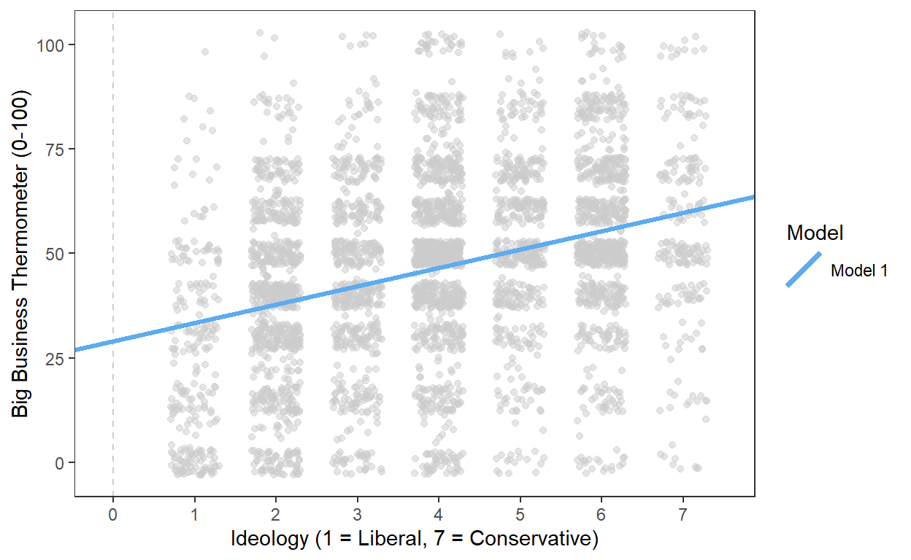
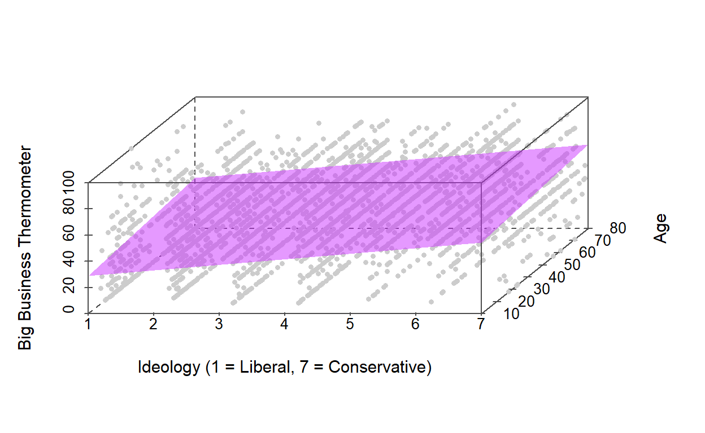
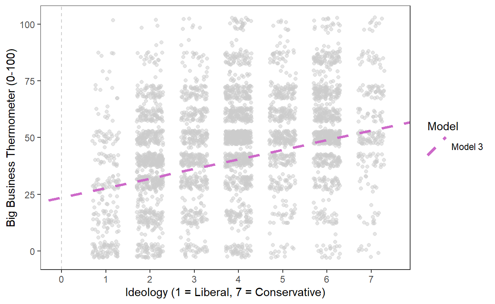
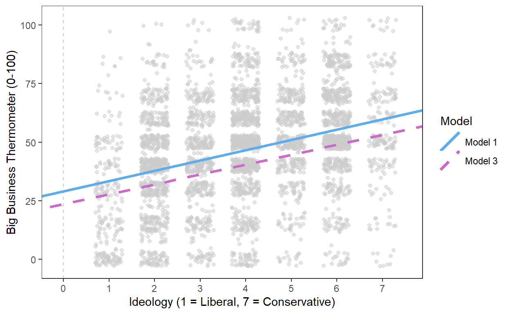
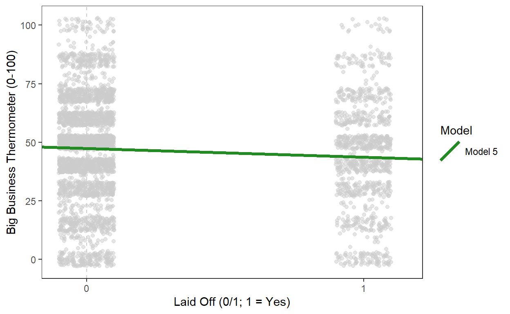
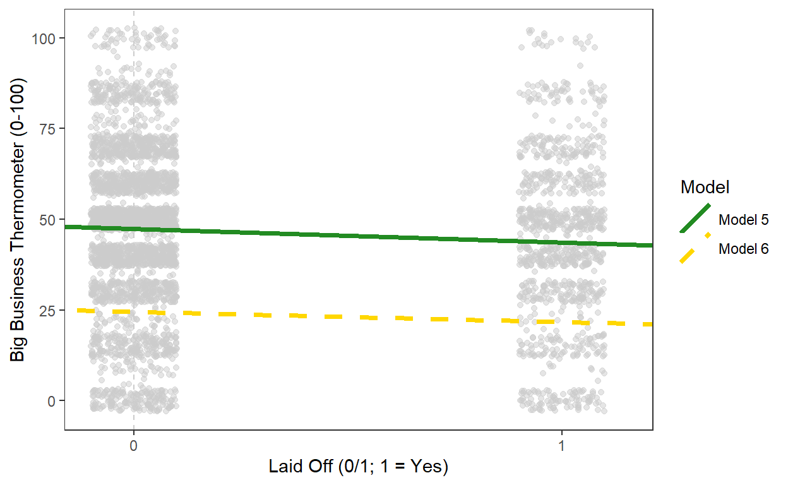
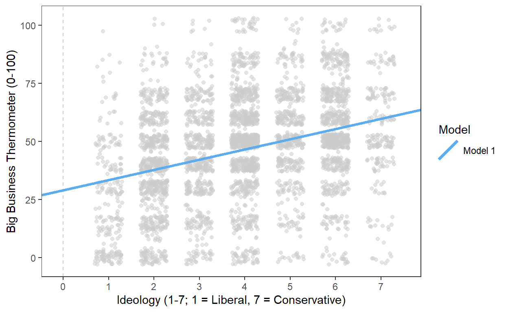
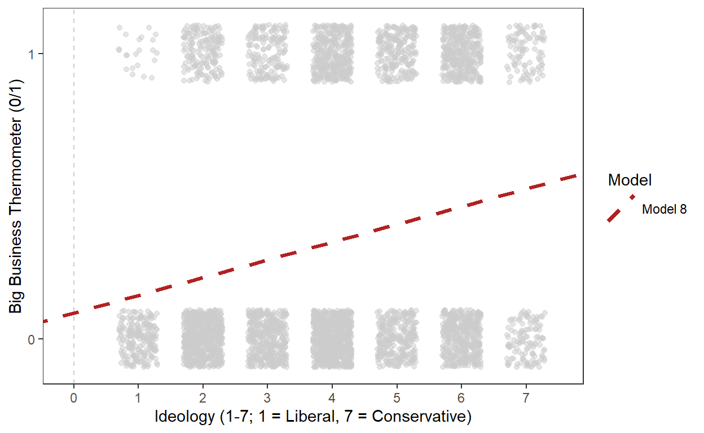
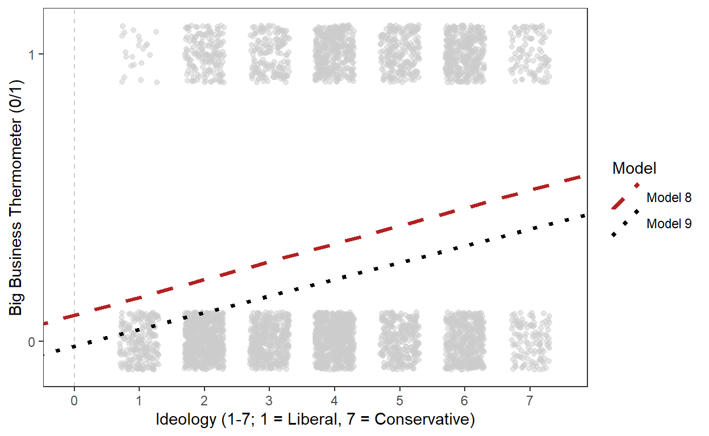

Welcome
In the previous tutorial, we worked on estimating, interpreting, and visualizing bivariate linear regression models. In those models, we only worked with two variables, one dependent and one independent, both of which were continuous.
In this tutorial, we’re going to extend our applications of the basic regression model. First, we’ll introduce multiple regression models—models with more than one independent variable. Then, we’ll explore regression models with dichotomous independent and/or dependent variables.
Click the button below to get started!
Topic 1: Overview of Multiple Regression
Introduction
Remember our four causal hurdles?
Credible Mechanism
Reverse Causality
Covariation / Correlation
Confounding Variables
When we discussed bivariate hypothesis tests, we said that there was one causal hurdle, confounding variables, that we were never going to be able to clear with bivariate tests (because by definition, bivariate tests only include two variables). However, confounding variables can be included in our regression models.
The basic regression model that we’ve been learning about is actually quite flexible. So far, we’ve only used it to estimate a single linear relationship, but it’s possible to estimate more than one linear relationship at the same time, by adding more than one independent variable to a model. These models with more than one independent variable are called multiple regression models.
General Intuition of Multiple Regression
With a bivariate regression, here was our model:
\[ \hat{Y}_i = \hat{\alpha} + \hat{\beta} X_i + \hat{\epsilon}_i \]
However, we can actually add as many independent variables (\(X\)) as necessary to explain our dependent variable, especially if we’re worried that there are confounding variables biasing our results:
\[ \hat{Y}_i = \hat{\alpha} + \hat{\beta}_1 X_{1i} + \hat{\beta}_2 X_{2i} + ... + \hat{\beta}_n X_{ni} + \hat{\epsilon}_i \]
As you can see above, much of the model remains the same. There is still only one set of predicted values for our dependent variable (\(\hat{Y}_i\)), one intercept (\(\hat{\alpha}\)), and one set of residuals (\(\hat{\epsilon}_i\)).
In a multiple regression model, though, we have multiple independent variables (\(X_n\)), each with its own slope (\(\hat{\beta}_n\)). So our first independent variable, \(X_1\), has \(\hat{\beta}_1\). Our second independent variable, \(X_2\) has \(\hat{\beta}_2\). If we have a third independent variable, \(X_3\), if would have a \(\hat{\beta}_3\), and so on.
What does this mean for estimating our results? For bivariate models, we estimated \(\hat{\beta}\) by comparing all of the variation in our independent variable (\(X\)) to all of the variation in our dependent variable (\(Y\)). That’s why we could calculate it by multiplying the ratio of the two variables’ standard deviations by the correlation coefficient.
Multiple regression models are a little different. In these models, our estimates of \(\hat{\beta}_n\) come only from cases where our independent variables don’t vary together, where they aren’t related to each other. Consider a multiple regression model where we only have two independent variables, \(X_1\) and \(X_2\):
\[ \hat{Y}_i = \hat{\alpha} + \hat{\beta}_1 X_{1i} + \hat{\beta}_2 X_{2i} + \hat{\epsilon}_i \]
To estimate the slope for \(X_1\), \(\hat{\beta}_1\), we will essentially need three steps:
Perform a bivariate regression where \(X_1\) is the dependent variable and \(X_2\) is the independent variable (\(X_1 \sim X_2\)).
Take the residuals for this model. These represent the variation in \(X_1\) that is not explained by \(X_2\). By moving forward with these residuals, we remove the concern that \(X_2\) is a confounding variable for the relationship between \(X_1\) and \(Y\), because we’ve removed the part where they overlap with each other.
Perform a bivariate regression where \(Y\) is our dependent variable and the residual of \(X_1\) is our independent variable.
Then we do the entire thing all over again to estimate the slope for \(X_2\), \(\hat{\beta}_2\):
Perform a bivariate regression where \(X_2\) is the dependent variable and \(X_1\) is the independent variable (\(X_2 \sim X_1\)).
Take the residuals for this model.
Perform a bivariate regression where \(Y\) is our dependent variable and the residual of \(X_2\) is our independent variable.
This won’t work if \(X_1\) and \(X_2\) are perfectly correlated with each other, because we need to find unique variation in the variables to complete these steps. We can’t do that if they perfectly predict each other.
In the end, we’re left with values of \(\hat{\alpha}\) and \(\hat{\beta}_n\) that jointly minimize the sum of squared residuals. Our \(\hat{\alpha}\) is the predicted value of Y when all of our independent variables are zero. \(\hat{\beta}_1\) is the slope of the line of best fit between \(X_1\) and \(Y\) once we’ve accounted for \(X_2\) (or are holding its effect constant), and \(\hat{\beta}_2\) is the slope of the line of best fit between \(X_2\) and \(Y\) once we’ve accounted for \(X_1\).
That might feel kind of complicated, but the practical applications on our end (with regards to coding and interpretation) actually require pretty limited changes from bivariate regression. Check out the next two topics to see why.
Topic 2: Performing Multiple Regression in R
Running multiple regression models in R looks very similar to running bivariate regression models:
Create an object by naming it and using the assignment arrow (
<-).Use the
lm()command to specify that we’re running a linear model.Identify our variables, using the format
DV ~ IV1 + IV2 + ... + IVN, where DV is our dependent variable and the IVs are our independent variables.Identify our data frame.
Do you see the main change? We just add each of our additional independent variables (or “control variables”) with plus signs. The rest of our code remains the same.
In the example code below, we have created a model object called
mod3, which is a linear model (lm()) that has
the dependent variable business and the independent
variables ideology and age, all of which are
drawn from the data frame called anes. Then we’ve used the
summary() command to see our model results and the
nobs() command to tell us the number of observations going
into our model.
mod3 <- lm(business ~ ideology + age, data = anes)
# OR
mod3 <- lm(anes$business ~ anes$ideology + anes$age)
summary(mod3)##
## Call:
## lm(formula = anes$business ~ anes$ideology + anes$age)
##
## Residuals:
## Min 1Q Median 3Q Max
## -62.611 -12.195 0.505 13.323 67.141
##
## Coefficients:
## Estimate Std. Error t value Pr(>|t|)
## (Intercept) 23.53974 1.26790 18.566 < 2e-16 ***
## anes$ideology 4.22068 0.20007 21.096 < 2e-16 ***
## anes$age 0.13417 0.02289 5.861 4.95e-09 ***
## ---
## Signif. codes: 0 '***' 0.001 '**' 0.01 '*' 0.05 '.' 0.1 ' ' 1
##
## Residual standard error: 21.37 on 4197 degrees of freedom
## Multiple R-squared: 0.1113, Adjusted R-squared: 0.1108
## F-statistic: 262.7 on 2 and 4197 DF, p-value: < 2.2e-16nobs(mod3)## [1] 4200The results appear in a format that is nearly identical to that of a bivariate regression:
Call Section: At the top of our results, R prints the code that we used to run our model. We can see again that our dependent variable is
business, because it appears before the~, and our independent variables areideologyandage, because they appears after the~.Coefficients Section: This section contains most of the most important information we need from our model results. This is where the biggest change from bivariate regression results appears, because we’ll now have a row of results for each of our independent variables.
Estimate: This column has our \(\hat{\alpha}\) and \(\hat{\beta}_n\). \(\hat{\alpha}\) (23.5) appears in the row marked Constant; \(\hat{\beta_1}\) (4.2) appears in the row marked with our first independent variable, Ideology; and \(\hat{\beta_2}\) (0.1) appears in the row marked with our second independent variable, Age.
Std. Error: This column has the standard errors (or estimates of the uncertainty) of each estimate. The standard error for \(\hat{\alpha}\) is 1.3, the standard error for \(\hat{\beta}_1\) is 0.2, and the standard error for \(\hat{\beta_2}\) is 0.0.
t value: This column reports the t-scores for each of our estimates. These values are calculated by dividing the estimate by the standard error. In general, t-scores that are more positive than 1.96 or more negative than -1.96 are statistically significant (at the 95 percent confidence level). All of our t-scores (18.6 for our intercept, 21.1 for our Ideology \(\hat{\beta}_1\), and 5.9 for our Age \(\hat{\beta}_2\)) indicate statistical significance.
Pr(>|t|): This column reports the p-values associated with each t-score. Remember that because we’re working with a 95 percent confidence interval, p-values of less than 0.05 will indicate statistically significant results. These are calculated from our t-scores, so they’ll never disagree with them. That means that we shouldn’t be surprised to see that all of our p-values are less than 0.05.
Stars: To help us quickly see which estimates are statistically significant, R provides stars for significant results. You’ll see different numbers of stars for different p-values, but for our purposes, anything with one or more stars will be considered statistically significant, because those are the ones with a p-value of less than 0.05 (at least). All three of our estimates get stars here!
Multiple R-Squared (\(R^2\)): This value tells us the proportion of variance of our dependent variable that is explained by our model. \(R^2\) ranges from 0 to 1, and higher values are typically considered better. Our \(R^2\) value of 0.111 tells us that we have explained 11.1 percent of the variance of
business. However, this number is most useful when comparing different models performed on the same data.Number of Observations (N): It’s also standard to report the number of observations that went into our model. Importantly, this number won’t always match with the number of observations in our data frame, so we have to produce it with a separate command (
nobs()), which we run on our model object (mod1). This model used 4,200 observations.
Practice
Now, you try it! Say that we want to estimate a model
(mod4) that has business as the dependent
variable and ideology, age, and
education as independent variables. Write the code for this
model below. Don’t forget to use the summary() command to
ask R to show the model results and the nobs() command to
get the number of observations.
mod4 <- lm(business ~ ideology + ___)mod4 <- lm(business ~ ideology + age + education, data = anes)
# OR
mod2 <- lm(anes$business ~ anes$ideology + anes$age + anes$education)
summary(mod4)
nobs(mod4)Can you find the \(\hat{\alpha}\)
(intercept), \(\hat{\beta}_n\) (slope),
N, and \(R^2\) for
mod4?
## Error in `loadNamespace()`:
## ! namespace 'xfun' 0.52 is already loaded, but >= 0.55 is requiredTopic 3: Interpreting Multiple Regression Output
As we did with bivariate models, let’s put this knowledge into the context of our hypothesis testing framework as we discuss how to interpret our results.
Step 1: Null and Alternative Hypotheses
Our primary working example for the past two tutorials has been the relationship between individuals’ ideologies and their feelings about big business. In general, people with more conservative ideologies favor big business more than people with more liberal ideologies. Formally, we have these two hypotheses:
Null Hypothesis (\(H_0\)): There is NO relationship between ideology and ratings of big business.
Alternative Hypothesis (\(H_A\)): There IS a relationship between ideology and ratings of big business.
Step 2: Hypothesis Test
We’ve run a few tests to better understand individuals’ ratings of big business, all shown in the table below. In the last tutorial, we ran a bivariate regression with ideology as the sole independent variable (Model 1). This time, we added a multiple regression model (Model 3) with both ideology and age as independent variables.
| Big Business Thermometer (0-100) | ||
| Model 1 | Model 3 | |
|---|---|---|
| Ideology (1-7; 7 = Conservative) | 4.388* | 4.221* |
| (0.199) | (0.200) | |
| Age | 0.134* | |
| (0.023) | ||
| Constant | 29.045* | 23.540* |
| (0.855) | (1.268) | |
| N | 4200 | 4200 |
| R-squared | 0.104 | 0.111 |
| ∗ p < 0.05 | ||
Steps 3 and 4: Compare Results to a Set Standard and Draw Conclusions
Focusing just on Model 3 for now, we can see that our coefficient estimate for ideology (\(\hat{\beta})_1\)) has a star, so its p-value is less than 0.05. That means that we can reject the null hypothesis—there does seem to be a relationship between big business ratings and ideology!
We also have a star on the coefficient estimate for age (\(\hat{\beta})_1\)), which means it is statistically significant, too.
Let’s go into more detail about how to interpret these results.
The Intercept (\(\hat{\alpha}\))
In a bivariate model, the intercept (aka “the constant” or \(\hat{\alpha}\)) is the predicted value of \(Y\) (our dependent variable) when \(X\) (our independent variable) equals 0. In a multiple regression model, it’s very similar—it’s **the predicted value of \(Y\) (our dependent variable) when all of our independent variables (\(X_n\)) equal 0.
For Model 3, our value of \(\hat{\alpha}\) is 23.5. That means we can say that the predicted rating of big business for someone who has both an ideology score and an age of 0 is 23.5.
The Slopes (\(\hat{\beta}_n\))
In a bivariate model, we used this interpretation of \(\hat{\beta}\): “As [independent variable] increases by 1 unit, [dependent variable] [increases/decreases] by [\(\hat{\beta}\)] units, on average.” In that interpretation, we fill in “increases” or “decreases” based on whether \(\hat{\beta}\) is positive (“increases”) or negative (“decreases”). And we use the “on average” to say that this is an average effect—it may not perfectly describe each observation.
It’s almost identical when interpreting multiple regression models: “As [independent variable] increases by 1 unit, [dependent variable] [increases/decreases] by [\(\hat{\beta}_n\)] units, on average and all else equal.” The new addition is the “and all else equal” at the end, which serves to acknowledge that we estimated the \(\hat{\beta}_n\) for each variable while holding the other variables constant, or equal. (This just means that our estimates only hold true while taking the other variables in our model into account.)
In Model 3, the \(\hat{\beta}_1\) for ideology is 4.2. That means that we would interpret it this way: As ideology increases by 1 unit (on a 7-point scale, becoming more conservative), the rating of big business increases by 4.2 units, on average and all else equal. This estimate is statistically significant, because its p-value is less than 0.05. (It got a star.)
This estimate decreased from the bivariate model, where the coefficient estimate for ideology was 4.4. It’s very common for coefficient estimates to change once we include control variables (at least when those control variables have their own statistically significant results)—sometimes the estimates will increase or decreases, and sometimes they’ll become statistically significant or stop being statistically significant. This is why including control variables (potential confounders) is so important! Without them, our estimates would be incorrect.
Age’s coefficient estimate (\(\hat{\beta}_2\)) is 0.1. Thus, for age we’d say: As age increase by 1 unit (1 year), the rating of big business increases by 0.1 units, on average and all else equal. This estimate is also statistically significant, because its p-value is less than 0.05.
It’s important to note what 1 unit means in our interpretations, if we can. This helps provide context to our readers. Age is measured in years, so a 1-unit increase is an increase of 1 year. That means each additional year is associated with that 0.1-point increase in big business scores, and each increase in 10 years results in a 1-point increase in big business scores (because 0.1 times 10 is 1).
Our interpretation would feel quite different if age was measured in decades, instead. Then, each increase of 1 unit of age would represent an increase of 10 years. That would make the slope of our coefficient estimate feel much smaller.
Ideology, on the other hand, doesn’t have specific units. One way we can provide context is to reference its scale. This variable ranges from 1 to 7, so an increase in one unit is an increase by one-seventh of its scale. That’s a much bigger increase than a 1-unit increase on a scale with 100 values and a smaller increase than a scale with 3 values.
N
There is no change in our interpretation of N for multiple regression
models. It’s still the number of observations going into our
model. In Model 3, the N is 4,200, so there were 4,200 rows in
our data frame with complete data (no NAs) that went into
estimating our model.
\(R^2\) (R-squared)
Finally, we have the \(R^2\) value, which also doesn’t change for multiple regression models. It’s still the proportion of the variance in our dependent variable that is explained by our model. The potential values of \(R^2\) range between 0 and 1, since it’s a proportion, and higher values represent more of the variance being explained.
In our example, the \(R^2\) value is 0.111. That means that we have explained 11.1 percent of the variance in our dependent variable, the ratings of big business.
Remember, though, that \(R^2\) is most helpful when we’re using it to compare models. In the table above, Model 1 has an \(R^2\) of 0.104, and Model 3 has an \(R^2\) of 0.111. That means that Model 3 explains more of the variance in our dependent variable, so it fits the data better.
Practice
Let’s apply all of this to the model you ran in the previous topic,
mod4! Here is a table of results for that model:
| Big Business Thermometer (0-100) | |
| Model 4 | |
|---|---|
| Age | 0.132* |
| (0.023) | |
| Ideology (1-7; 7 = Conservative) | 4.316* |
| (0.204) | |
| Level of Education (1-8) | 0.410* |
| (0.172) | |
| Constant | 21.250* |
| (1.591) | |
| N | 4200 |
| R-squared | 0.112 |
| ∗ p < 0.05 | |
## Error in `loadNamespace()`:
## ! namespace 'xfun' 0.52 is already loaded, but >= 0.55 is requiredTopic 4: Visualizing Multiple Regression Models
Visualizing multiple regression results works approximately the same way as visualizing bivariate regression results. The main difference is that we can’t typically visualize the entire set of model results in one go.
When we estimate a bivariate regression, we can put both of our variables on a scatterplot and draw the line of best fit that describes their relationship:

If we add another independent variable, we would need to plot our three variables in three-dimensional space. The regression results would then look like a flat plane drawn to be as close to all of the points as possible (in all three dimensions):

With more independent variables, it gets too difficult to plot the results anymore.
Because of the difficulty of plotting in multiple dimensions, we typically just stick to two-dimensional scatterplots and lines of best fit for one independent variable per plot.
For Model 3, then, we’ll draw a scatterplot of the big business thermometer (\(Y\)) and ideology (\(X\)) and add a line defined by the intercept of the entire model (\(\hat{\alpha}\)) and the slope for ideology (\(\hat{\beta}_1\)).
mod3 <- lm(business ~ ideology + age, data = anes)
# This is the code to get the slope for ideology:
mod3$coefficients[2]## ideology
## 4.220684ggplot(data = anes, aes(x = ideology, y = business)) +
geom_jitter(width = .3, height = 3, alpha = .5, color = "grey80") +
theme_bw() +
theme(panel.grid = element_blank()) +
scale_x_continuous(limits = c(-.1, 7.5), breaks = seq(0, 7, by = 1)) +
labs(x = "Ideology (1 = Liberal, 7 = Conservative)",
y = "Big Business Thermometer (0-100)",
color = "Model") +
geom_vline(xintercept = 0, color = "grey80", linetype = 2) +
geom_abline(aes(slope = mod3$coefficients[2], intercept = mod3$coefficients[1],
color = "Model 2"), linewidth = 1.35, lty = 2) +
# Here's where we specify that we're using the slope for ideology.
scale_color_manual(values = c("orchid3"), labels = c("Model 3"))
Taking this approach will also let us compare the different results for a variable across models. There are four main changes that should be made to make this kind of comparison graph effective:
Add each of the regression lines using a
geom_abline()command, making sure to update the relevant model numbers for each slope and intercept. The first line below draws on the estimates frommod1, and the second line draws on the estimates frommod3.Inside of each
geom_abline()command, the slope and intercept need to be wrapped in anaes()command. It also needs to have some kind of aesthetic characteristic argument to differentiate your lines, likecolor,linetype,lineweight, etc. The lines below usecolor, along with their respective model numbers (Models 1 and 3) as labels. All other aesthetic characeristics go inside of thegeom_abline()command but outside of theaes().Add a
scale_color_manual()command to create a legend. The most important arguments inside of this command arelabelsandvalues. Thelabelsargument takes a vector of labels to assign, one per line. These should line up with the labels used inside of thegeom_abline()commands—here, it’s Model 1 and Model 3. Thevaluesargument is where we provide the different aesthetic characteristics for our lines. Since these lines use color, thevaluesargument takes a vector of colors (steelblue2 and orchid3).Inside of a
labs()command, change the label of the legend by changing the label of the aesthetic that you used to differentiate your lines to say “Model.” The code below uses color to differentiate the lines, so inside of thelabs()command iscolor = "Model".
ggplot(data = anes, aes(x = ideology, y = business)) +
geom_jitter(width = .3, height = 3, alpha = .5, color = "grey80") +
theme_bw() +
theme(panel.grid = element_blank()) +
scale_x_continuous(limits = c(-.1, 7.5), breaks = seq(0, 7, by = 1)) +
labs(x = "Ideology (1 = Liberal, 7 = Conservative)",
y = "Big Business Thermometer (0-100)",
color = "Model") +
geom_vline(xintercept = 0, color = "grey80", linetype = 2) +
geom_abline(aes(slope = mod1$coefficients[2], intercept = mod1$coefficients[1],
color = "Model 1"), linewidth = 1.35, lty = 1) +
geom_abline(aes(slope = mod3$coefficients[2], intercept = mod3$coefficients[1],
color = "Model 3"), linewidth = 1.35, lty = 2) +
# Here's where we specify that we're using the slope for ideology.
scale_color_manual(values = c("steelblue2", "orchid3"), labels = c("Model 1", "Model 3"))
In the plot above, we can see that Model 3’s intercept is lower than Model 1 (which we would expect from their results). Model 3’s slope is also ever so slightly smaller.
Practice
Your turn! Can you add the regression lines from Models 1
(mod1), 3 (mod3), and 4 (mod4) to
the scatterplot below? Don’t forget the legend!
mod1 <-lm(business ~ ideology, data = anes)
mod3 <-lm(business ~ ideology + age, data = anes)
mod4 <- lm(business ~ ideology + age + education, data = anes)
ggplot(data = anes, aes(x = ideology, y = business)) +
geom_jitter(width = .3, height = 3, alpha = .5, color = "grey80") +
theme_bw() +
theme(panel.grid = element_blank()) +
scale_x_continuous(limits = c(-.1, 7.5), breaks = seq(0, 7, by = 1)) +
labs(x = "Ideology (1 = Liberal, 7 = Conservative)",
y = "Big Business Thermometer (0-100)") +
geom_vline(xintercept = 0, color = "grey80", linetype = 2)# Each regression needs its own geom_abline() command. # Inside of each geom_abline() command, there is an aes() command.
# That aes() should have the slope, intercept, and color arguments
# for each line.# The scale_color_manual() command adds the legend to the plot.
# It needs labels and values arguments.# Looking to change the label of the legend?
# Don't forget the labs() command!mod1 <-lm(business ~ ideology, data = anes)
mod3 <-lm(business ~ ideology + age, data = anes)
mod4 <- lm(business ~ ideology + age + education, data = anes)
ggplot(data = anes, aes(x = ideology, y = business)) +
geom_jitter(width = .3, height = 3, alpha = .5, color = "grey80") +
theme_bw() +
theme(panel.grid = element_blank()) +
scale_x_continuous(limits = c(-.1, 7.5), breaks = seq(0, 7, by = 1)) +
labs(x = "Ideology (1 = Liberal, 7 = Conservative)",
y = "Big Business Thermometer (0-100)",
color = "Model") +
geom_vline(xintercept = 0, color = "grey80", linetype = 2) +
geom_abline(aes(slope = mod1$coefficients[2], intercept = mod1$coefficients[1],
color = "Model 1"), linewidth = 1.35, lty = 1) +
geom_abline(aes(slope = mod3$coefficients[2], intercept = mod3$coefficients[1],
color = "Model 3"), linewidth = 1.35, lty = 2) +
geom_abline(aes(slope = mod4$coefficients[2], intercept = mod4$coefficients[1],
color = "Model 4"), linewidth = 1.35, lty = 3) +
scale_color_manual(values = c("steelblue2", "orchid3", "forestgreen"), labels = c("Model 1", "Model 3", "Model 4"))Topic 5: Dichotomous Independent Variables
Up to this point, we’ve focused on the application of linear regression models to continuous variables (or ordinal scales that have enough values to be treated as continuous). However, it is possible to apply the same modeling approach to discrete data. In this topic, we’ll explore the inclusion of dichotomous (or binary) independent variables (variables that only take on two values) in a linear regression model.
Bivariate Regression Model
Say that we kept thinking about our big business ratings and realized
that people’s experiences with being laid off might affect the way that
they feel about big business corporations. The ANES asks respondents if
they were out of work or laid off at any time during the last six
months, and the only answer choices are yes (1) and no (0). That means
that this variable (stored in our data frame as a column named
laidoff) is dichotomous.
Including dichotomous variables in our model code works exactly the same way as including a continuous variable.
mod01x <- lm(business ~ laidoff, data = anes)
summary(mod01x)##
## Call:
## lm(formula = business ~ laidoff, data = anes)
##
## Residuals:
## Min 1Q Median 3Q Max
## -47.378 -13.637 2.622 12.622 56.363
##
## Coefficients:
## Estimate Std. Error t value Pr(>|t|)
## (Intercept) 47.3776 0.4026 117.666 < 2e-16 ***
## laidoff -3.7409 0.8068 -4.637 3.65e-06 ***
## ---
## Signif. codes: 0 '***' 0.001 '**' 0.01 '*' 0.05 '.' 0.1 ' ' 1
##
## Residual standard error: 22.61 on 4198 degrees of freedom
## Multiple R-squared: 0.005095, Adjusted R-squared: 0.004858
## F-statistic: 21.5 on 1 and 4198 DF, p-value: 3.65e-06nobs(mod01x)## [1] 4200We also take the same approach to including the results for dichotomous independent variables in tables of results (although it’s good to note that we’re working with a dichotomous variable in the variable label):
| Big Business Thermometer (0-100) | |
| Model 5 | |
|---|---|
| Laid Off (0/1; 1 = Yes) | -3.741* |
| (0.807) | |
| Constant | 47.378* |
| (0.403) | |
| N | 4200 |
| R-squared | 0.005 |
| ∗ p < 0.05 | |
It does, however, slightly change our interpretation of the results. In a bivariate model (Model 5), differences appear in the interpretation of both \(\hat{\alpha}\) and \(\hat{\beta}\).
Intercept (\(\hat{\alpha}\)): In a bivariate model with a dichotomous independent variable, the intercept is still the predicted value of our dependent variable when the independent variable is 0. However, with this variable, a 0 value means something specific—it refers to respondents who weren’t laid off in the past six months. Thus, the predicted big business rating for respondents who weren’t laid off in the past six months is 47.4.
Slope (\(\hat{\beta}\)): The interpretation of the slope in this kind of model still rests on the idea of a one-unit increase in \(X\) being associated with a \(\hat{\beta}\) increase/decrease in \(Y\). But a one-unit increase in our Laid Off variable refers to the difference between not being laid off (0) and being laid off (1). That means that being laid off is associated with a 3.7-point decrease in big business ratings, on average (compared to individuals who weren’t laid off). This result is statistically significant, because its p-value is less than 0.05.
N: This is the same interpretation! 4,200 observations went into our model.
\(R^2\): This is the same interpretation! This model explains 0.5 percent of the variance in the big business ratings.
A visualization of our results does also look slightly different (even if we construct it the same way). Our independent variable can only take on two values, so all of our data points appear at those two points on the x-axis. Our regression line connects the average value of the dependent variable (big business ratings) when the independent variable (being laid off) is 0 to the average value of the dependent variable when the independent variable is 1.
ggplot(data = anes, aes(x = laidoff, y = business)) +
geom_jitter(width = .1, height = 3, alpha = .5, color = "grey80") +
theme_bw() +
theme(panel.grid = element_blank()) +
scale_x_continuous(limits = c(-.1, 1.15), breaks = c(0,1)) +
labs(x = "Laid Off (0/1; 1 = Yes)",
y = "Big Business Thermometer (0-100)",
color = "Model") +
geom_vline(xintercept = 0, color = "grey80", linetype = 2) +
geom_abline(aes(slope = mod01x$coefficients[2], intercept = mod01x$coefficients[1],
color = "Model 5"), linewidth = 1.35, lty = 1) +
scale_color_manual(values = c("forestgreen"), labels = c("Model 5"))
Multiple Regression Model
| Big Business Thermometer (0-100) | |
| Model 6 | |
|---|---|
| Laid Off (0/1; 1 = Yes) | -2.816* |
| (0.763) | |
| Ideology (1-7; 7 = Conservative) | 4.190* |
| (0.200) | |
| Age | 0.131* |
| (0.023) | |
| Constant | 24.494* |
| (1.292) | |
| N | 4200 |
| R-squared | 0.114 |
| ∗ p < 0.05 | |
In a multiple regression model with a dichotomous independent variable (Model 6), the only difference in interpretation from a multiple regression model without dichotomous independent variables is with the coefficient estimate for our dichotomous variable(s).
Intercept (\(\hat{\alpha}\)): The predicted big business rating when all of our independent variables are 0 is 24.5.
Laid Off’s \(\hat{\beta}_1\): Being laid off is associated with a 2.8-point decrease in big business ratings (compared to not being laid off), on average and all else equal. This result is statistically significant, because its p-value is less than 0.05.
Ideology’s \(\hat{\beta}_2\): As ideology increases by 1 unit on its 7-point scale (becoming more conservative), big business ratings increase by 4.2 points, on average and all else equal. This result is statistically significant, because its p-value is less than 0.05.
Age’s \(\hat{\beta}_3\): As age increases by 1 year, big business ratings increase by 0.1 units, on average and all else equal. This result is statistically significant, because its p-value is less than 0.05.
N: 4,200 observations went into our model.
\(R^2\): This model explains 11.4 percent of the variance in the big business ratings.
In a visualization of these results, we can see that the intercept is much lower than in the bivariate results, and the slope is less negative.
mod01x2 <- lm(business ~ laidoff + ideology + age, data = anes)
ggplot(data = anes, aes(x = laidoff, y = business)) +
geom_jitter(width = .1, height = 3, alpha = .5, color = "grey80") +
theme_bw() +
theme(panel.grid = element_blank()) +
scale_x_continuous(limits = c(-.1, 1.15), breaks = c(0,1)) +
labs(x = "Laid Off (0/1; 1 = Yes)",
y = "Big Business Thermometer (0-100)",
color = "Model") +
geom_vline(xintercept = 0, color = "grey80", linetype = 2) +
geom_abline(aes(slope = mod01x$coefficients[2], intercept = mod01x$coefficients[1],
color = "Model 5"), linewidth = 1.35, lty = 1) +
geom_abline(aes(slope = mod01x2$coefficients[2], intercept = mod01x2$coefficients[1],
color = "Model 6"), linewidth = 1.35, lty = 2) +
scale_color_manual(values = c("forestgreen", "gold"), labels = c("Model 5", "Model 6"))
Practice
Let’s consider results for a multiple regression model with
business as the dependent variable when we include all of
the independent variables we’ve discussed—ideology,
age, education, and laidoff.
Can you write and run that model (mod01x3, which we’re
also going to call Model 7) below? Don’t forget to look at the summary
of results and check for the number of observations going into the
model!
mod01x3 <- lm(business ~ ideology + ___)mod01x3 <- lm(business ~ ideology + age + education + laidoff, data = anes)
summary(mod01x3)
nobs(mod01x3)Now that we’ve got the model results, let’s practice identifying and interpreting some of those important values!
## Error in `loadNamespace()`:
## ! namespace 'xfun' 0.52 is already loaded, but >= 0.55 is requiredTopic 6: Dichotomous Dependent Variables
In the previous topic, we applied linear regression models to cases where we have dichotomous independent variables. In this topic, we’ll look at models with dichotomous dependent variables, or outcome variables with only two possible values.
Overview of Models with Dichotomous (0/1) Independent Variables
Just like with independent variables, there are a variety of potential outcomes that we might be interested in that only have two possibilities: Did someone vote (1) or not (0)? Did someone attend college (1) or not (0)? Did a country experience a civil war in a given year (1) or not (0)? Unlike a 0/1 independent variable, though, using a 0/1 dependent variable changes the interpretation of our model results in a pretty significant way.
In a bivariate model with two continuous variables, we say that as \(X\) increases by 1 unit, Y increases/decreases by \(\hat{\beta}\) units, on average. And this makes sense when we visualize our results–we can see how our regression line provides the best estimate of \(Y\) (\(\hat{Y}\)) for each value of \(X\), as in the figure below.

Look what happens to our visualization when we switch our dependent variable to be dichotomous, instead. (In the figure below, the big business ratings have been re-coded—scores above 50 have been coded as 1, representing respondents who feel favorably toward big business, and scores of 50 or less have been coded as 0, representing respondents who do not feel favorably toward big business.)

There’s a lot to look at in the figure above, but there are two main things to pick up on:
Our regression line has a much harder time actually traveling through any of our points than it did when our dependent variable was continuous. That indicates that our model may have the wrong functional form. (And this is true—other kinds of models, like logit and probit models, are more appropriate for modeling 0/1 outcomes.)
Our regression line predicts values of Y that aren’t possible. We know that the only possible outcomes here are 0 (not liking big business) and 1 (liking big business). But our regression line predicts values of Y (\(\hat{Y}\)) that include 0.1, 0.2, 0.3, and so on. (We can tell because our line travels through those values of Y.)
The second point, in particular, means that we need to shift our interpretation of our results. Instead of interpreting our estimates as predicted values of (for \(\hat{\alpha}\)) or changes in values of \(Y\) (\(\hat{\beta}\)), we’re going to say that they represent the predicted probability (or changes in the predicted probability) that an event occurred, or that \(Y\) equals 1.
This kind of model is called the linear probability model, and it’s written like this:
\[ P(Y_i = 1|X_{ni}) = \hat{\alpha} + \hat{\beta}_1 X_{1i} + \hat{\beta}_2 X_{2i} + ... + \hat{\beta}_n X_{ni} + \hat{\epsilon}_i \]
The right-hand side of the equation above is the same as our standard multiple regression model. The change appears on the left-hand side, where instead of \(\hat{Y}\) (the predicted values of \(Y\)), we have \(P(Y_i = 1|X_{ni})\), the probability that \(Y\) equals one, given our values of X.
Example
Sticking with our example above, let’s look at our new model results
when our dependent variable, business has been re-coded to
be dichotomous.
In the new business01 variable, shown below, respondents
will be given a 1 when their business value was greater
than 50 and a 0 when their business value was less than or
equal to 50. We’re then going to estimate a model with
business01 as the dependent variable and
ideology, age, and laidoff as our
independent variables.
anes <- anes %>%
mutate(business01 = ifelse(business > 50, 1, 0))
mod01y2 <- lm(business01 ~ ideology + age + laidoff, data = anes)The results from this model are shown in the table below.
| Big Business Thermometer (0-100) | |
| Model 9 | |
|---|---|
| Ideology (1-7; 7 = Conservative) | 0.058* |
| (0.004) | |
| Age | 0.003* |
| (0.000) | |
| Laid Off (0/1; 1 = Yes) | -0.038* |
| (0.016) | |
| Constant | -0.017 |
| (0.028) | |
| N | 4200 |
| R-squared | 0.057 |
| ∗ p < 0.05 | |
Check out the differences in how we interpret these results:
Intercept (\(\hat{\alpha}\)): The predicted probability of someone liking big business (\(Y = 1\)) when their ideology score is a 0, they are 0 years old, and they were not laid off in the past six months (or when all of our independent variables are 0) is -1.7 percent. (This isn’t a meaningful value, since we can’t have negative percentages.)
Ideology’s \(\hat{\beta}_2\): As ideology increases by 1 unit on its 7-point scale (becoming more conservative), the predicted probability of liking big business (\(Y=1\)) increases by 5.8 percentage points, on average and all else equal. This result is statistically significant, because the p-value is less than 0.05. (The coefficient estimate got a star.)
Age’s \(\hat{\beta}_3\): As age increases by 1 year, the predicted probability of liking big business (\(Y=1\)) increases by 0.3 percentage points, on average and all else equal. This result is statistically significant, because the p-value is less than 0.05.
Laid Off’s \(\hat{\beta}_1\): Having been laid off in the past six months is associated with a 3.8-percentage point decrease in the predicted probability of liking big business (compared to not being laid off), on average and all else equal. This result is statistically significant, because the p-value is less than 0.05.
N: This interpretation is the same! 4,200 observations went into our model.
\(R^2\): This interpretation is the same! This model explains 5.7 percent of the variance in the big business ratings.
Finally, we can visualize our results and compare them with a bivariate model.
mod01y <- lm(business01 ~ ideology, data = anes)
ggplot(data = anes, aes(x = ideology, y = business01)) +
geom_jitter(width = .3, height = .1, alpha = .5, color = "grey80") +
theme_bw() +
theme(panel.grid = element_blank()) +
scale_x_continuous(limits = c(-.1, 7.5), breaks = seq(0, 7, by = 1)) +
scale_y_continuous(breaks = c(0,1)) +
labs(x = "Ideology (1-7; 1 = Liberal, 7 = Conservative)",
y = "Big Business Thermometer (0/1)",
color = "Model") +
geom_vline(xintercept = 0, color = "grey80", linetype = 2) +
geom_abline(aes(slope = mod01y$coefficients[2], intercept = mod01y$coefficients[1],
color = "Model 8"), linewidth = 1.35, lty = 2) +
geom_abline(aes(slope = mod01y2$coefficients[2], intercept = mod01y2$coefficients[1],
color = "Model 9"), linewidth = 1.35, lty = 3) +
scale_color_manual(values = c("firebrick", "black"), labels = c("Model 8", "Model 9"))
Practice
Your turn! First, estimate a model (let’s call it
mod01y3, also referred to as Model 10 below) that uses
business01 as its dependent variable and
ideology, age, laidoff, and
education as its independent variables. Code to create
business01 has been provided for you.
anes <- anes %>%
mutate(business01 = ifelse(business > 50, 1, 0))anes <- anes %>%
mutate(business01 = ifelse(business > 50, 1, 0))
mod01y3 <- lm(business01 ~ ideology + ___)anes <- anes %>%
mutate(business01 = ifelse(business > 50, 1, 0))
mod01y3 <- lm(business01 ~ ideology + age + laidoff + education, data = anes)
summary(mod01y3)
nobs(mod01y3)Now that we’ve got the model results, let’s practice identifying and interpreting those important values!
## Error in `loadNamespace()`:
## ! namespace 'xfun' 0.52 is already loaded, but >= 0.55 is requiredNow that you’ve run and interpreted the model, can you visualize the
results? Let’s keep business01 on the y-axis and put
ideology on the x-axis.
anes <- anes %>%
mutate(business01 = ifelse(business > 50, 1, 0))
mod01y3 <- lm(business01 ~ ideology + age + laidoff + education, data = anes)anes <- anes %>%
mutate(business01 = ifelse(business > 50, 1, 0))
mod01y3 <- lm(business01 ~ ideology + age + laidoff + education, data = anes)
ggplot(data = anes, aes(x = ___, y = ___)) +
geom_jitter(___)anes <- anes %>%
mutate(business01 = ifelse(business > 50, 1, 0))
mod01y3 <- lm(business01 ~ ideology + age + laidoff + education, data = anes)
ggplot(data = anes, aes(x = ideology, y = business01)) +
geom_jitter(width = .3, height = .1, alpha = .5, color = "grey80") +
theme_bw() +
theme(panel.grid = element_blank()) +
scale_x_continuous(limits = c(-.1, 7.5), breaks = seq(0, 7, by = 1)) +
scale_y_continuous(breaks = c(0,1)) +
labs(x = "Ideology (1-7; 1 = Liberal, 7 = Conservative)",
y = "Big Business Thermometer (0/1)",
color = "Model") +
geom_vline(xintercept = 0, color = "grey80", linetype = 2) +
geom_abline(aes(slope = mod01y3$coefficients[2], intercept = mod01y3$coefficients[1],
color = "Model 10"), linewidth = 1.35, lty = 2) +
scale_color_manual(values = c("steelblue"), labels = c("Model 10"))